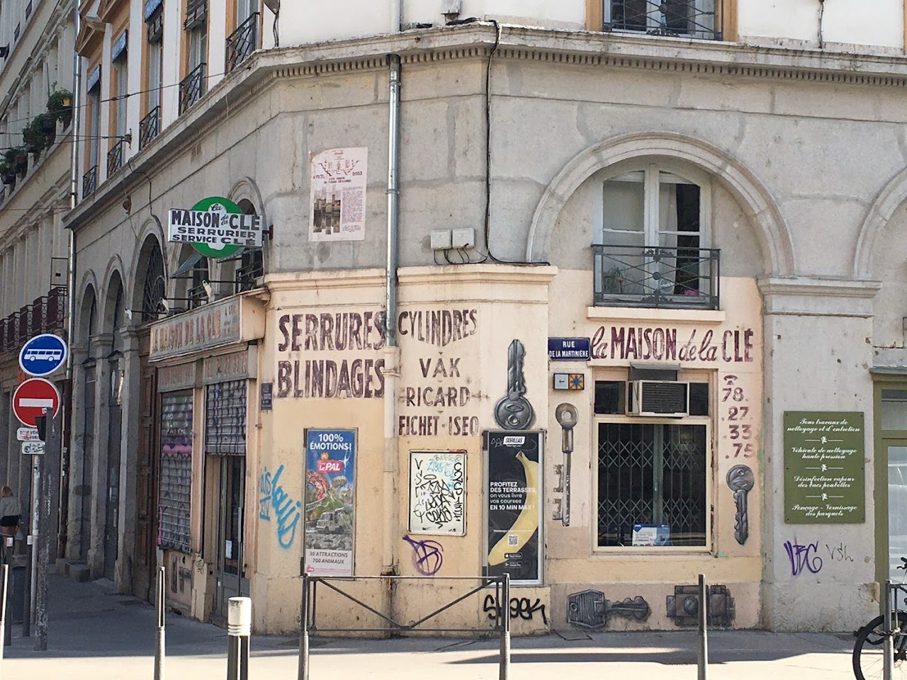
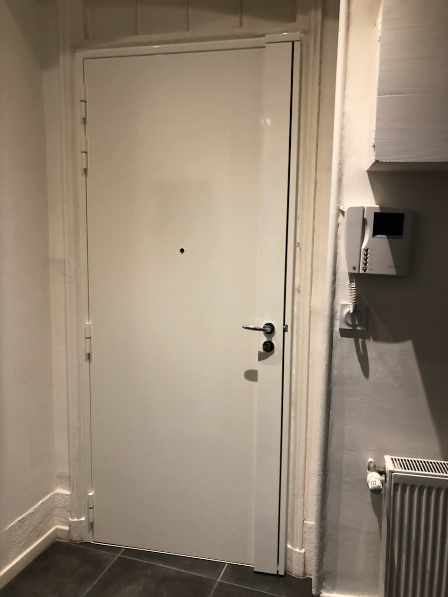
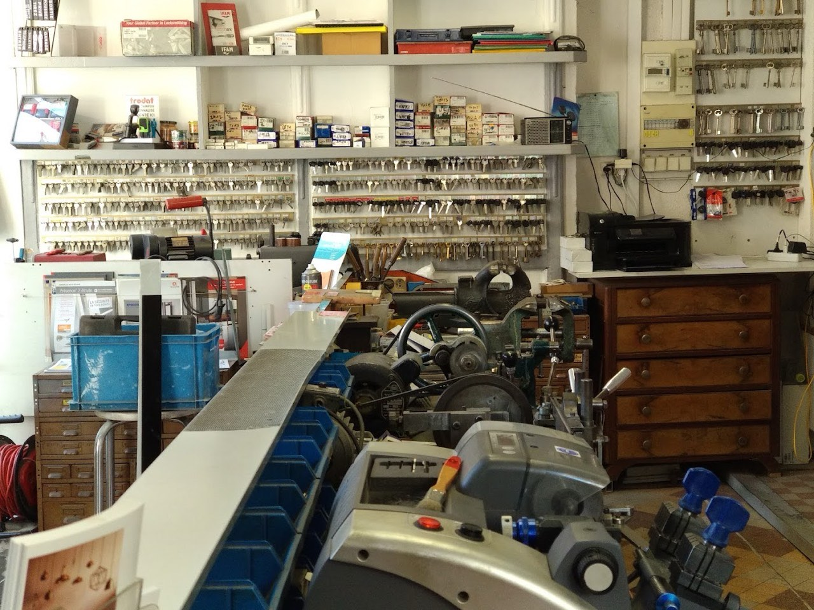

Serrurier · Lyon 1er
La Maison de la Clé
La Maison de la Clé, serrurier à Lyon 1er, vous accueille au 4 Pl. Tobie Robatel, 69001 Lyon. L'entreprise est en activité depuis 2004.

Nos prestations
- Ouverture de porte
- Changement de serrure
- Blindage et sécurisation
- Reproduction de clés
En images


Nous trouver
4 Pl. Tobie Robatel, 69001 Lyon
| Lundi | 08:00–19:00 |
| Mardi | 08:00–19:00 |
| Jeudi | 08:00–19:00 |
| Vendredi | 08:00–19:00 |
| Samedi | Fermé |
| Dimanche | Fermé |